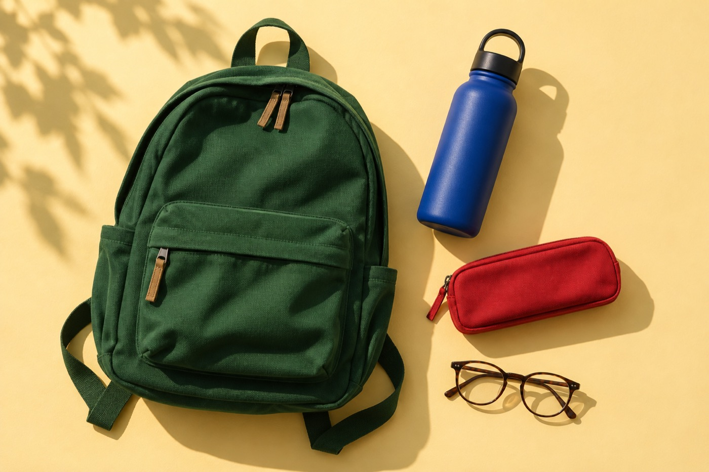

One photo, a better start.
Schools can photograph a found item and use an AI-generated description as a starting point.
Recuply is reimagining lost and found for schools, helping the things students care about find their way home.

From water bottles to school bags, the little things add up. We’re creating a clearer way to find them.
Schools can photograph a found item and use an AI-generated description as a starting point.
Parents and students can search with a rough description, even when they don’t know the perfect words.
Potential matches lead to clear collection instructions, with school staff guiding the handover.
Example only · not a live search
Not everyone remembers a brand or the exact shade of blue. Recuply’s planned search starts with the details you do remember and helps surface possible matches.
Explore the experience →